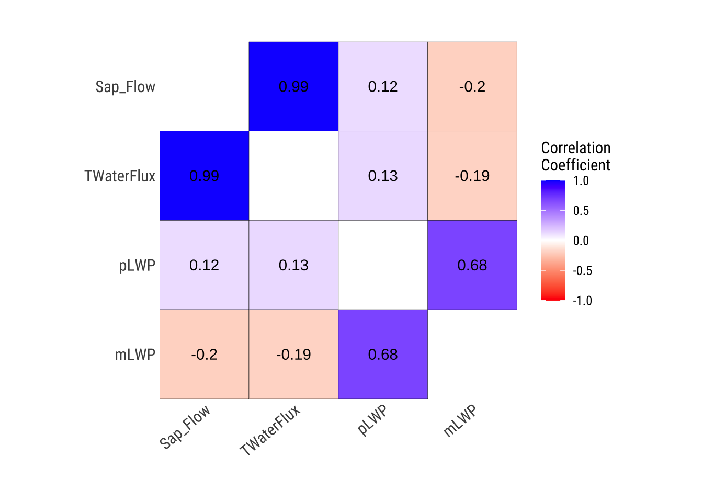
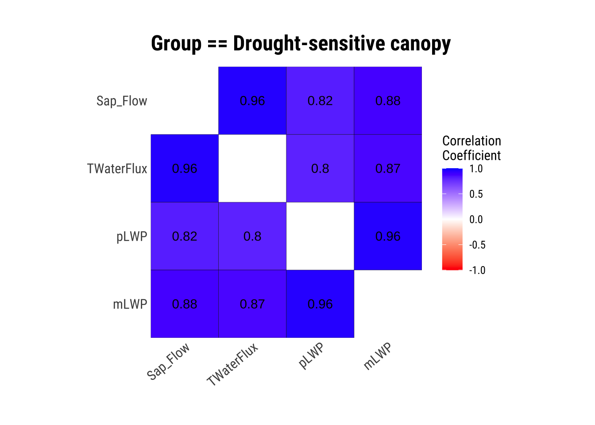
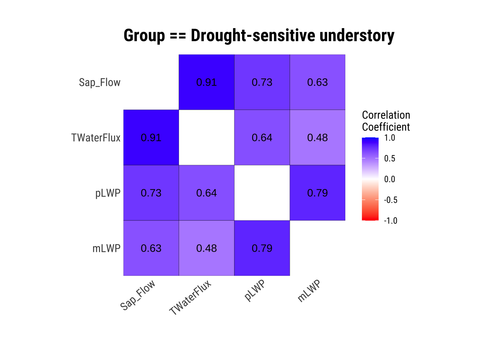
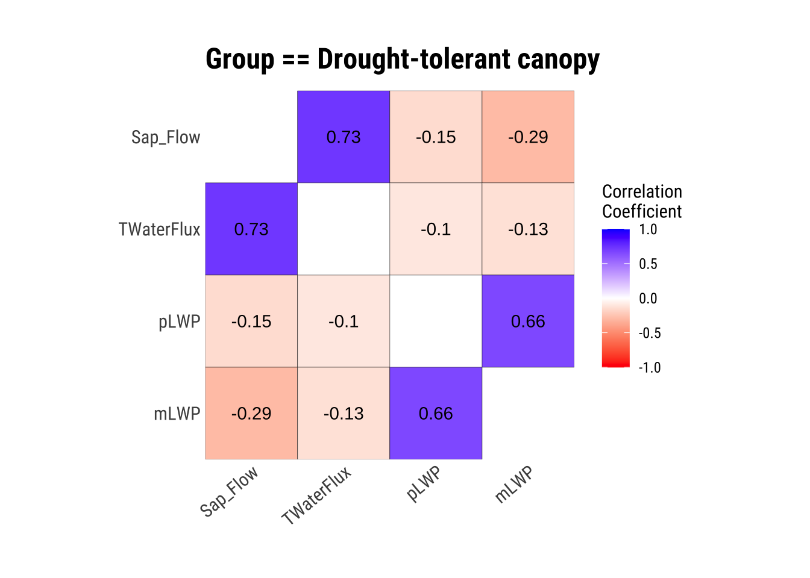
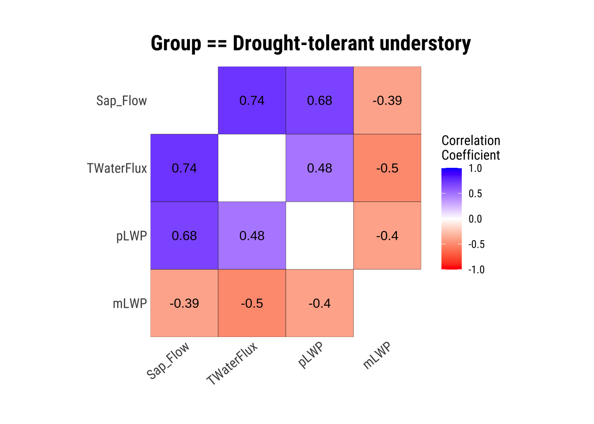
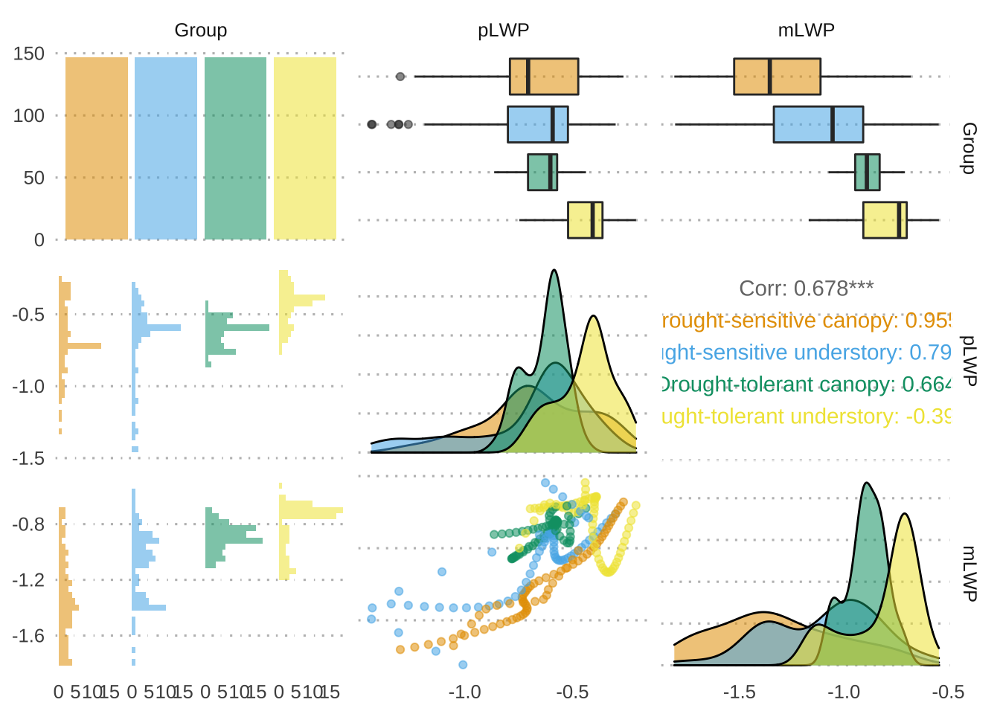

The downloaded binary packages are in
/var/folders/c0/w15tbmpn36d7jj_tpjm_sz9c0000gn/T//RtmpBIn6SJ/downloaded_packages
library(pacman)p_load(bbplot, colorblindr, cowplot, DataExplorer, dlookr, EnvStats, extrafont, faux, formattable, fGarch, MASS, GGally, ggcorrplot, ggdist, ggpubr, ggridges, ggsci, here, outliers, remotes, simstudy, showtext, tidyverse, tidyquant, truncnorm, twosamples, RColorBrewer, vtable)# Set global ggplot() theme# Theme pub_clean() from the ggpubr package with base text size = 16theme_set(theme_pubclean(base_size =12)) # All axes titles to their respective far right sidestheme_update(axis.title =element_text(hjust =1))# Remove axes tickstheme_update(axis.ticks =element_blank()) # Remove legend keytheme_update(legend.key =element_blank())
Load the Examine a Data Set
We will be using open source data from UArizona researchers that investigates the effects of climate change on canopy trees. (Meredith, Ladd, and Werner 2021)
# Let's explore a data set from the daily COVID-19 testing data setdataset <-read.csv(here("EDA_In_R_Summer_Book", "data", "Data_Fig2_Repo.csv"))# What does the data look like?dataset |>head() |>formattable()
Date
Group
Sap_Flow
TWaterFlux
pLWP
mLWP
10/4/19
Drought-sensitive canopy
184.040975
82.243292
-0.2633781
-0.6797690
10/4/19
Drought-sensitive understory
2.475989
1.258050
-0.2996688
-0.7613264
10/4/19
Drought-tolerant canopy
10.598949
4.405479
-0.4375563
-0.7225572
10/4/19
Drought-tolerant understory
4.399854
2.055276
-0.2052237
-0.7028581
10/5/19
Drought-sensitive canopy
182.905444
95.865255
-0.2769280
-0.7082610
10/5/19
Drought-sensitive understory
2.459209
1.225792
-0.3205980
-0.7928576
Describe and Visualize Correlations
Correlations are a statistical relationship between two numerical variables, may or may not be causal. Exploring correlations in your data allows you determine data independence, a major assumption of parametric statistics, which means your variables are both randomly collected.
If you’re interested in some underlying statistics…
Note that the dlookr default correlation is the Pearson’s \(r\) coefficient, but you can specify any method you would like: correlate(dataset, method = ""), where the method can be "pearson" for Pearson’s \(r\), "spearman" for Spearman’s$\rho$, or “kendall” for Kendall’s\(\tau\). The main differences are that Pearson’s \(r\) assumes a normal distribution for ALL numerical variables, whereas Spearman’s \(\rho\) and Kendall’s \(\tau\) do not, but Spearman’s \(\rho\) requires \(N > 10\), and Kendall’s \(\tau\) does not. Notably, Kendall’s \(\tau\) performs as well as Spearman’s \(\rho\) when \(N > 10\), so its best to just use Kendall’s \(\tau\) when data are not normally distributed.
# Table of correlations between numerical variables (we are sticking to the default Pearson's r coefficient)correlate(dataset) |>formattable()
var1
var2
coef_corr
TWaterFlux
Sap_Flow
0.9881370
pLWP
Sap_Flow
0.1202809
mLWP
Sap_Flow
-0.2011949
Sap_Flow
TWaterFlux
0.9881370
pLWP
TWaterFlux
0.1256446
mLWP
TWaterFlux
-0.1893302
Sap_Flow
pLWP
0.1202809
TWaterFlux
pLWP
0.1256446
mLWP
pLWP
0.6776509
Sap_Flow
mLWP
-0.2011949
TWaterFlux
mLWP
-0.1893302
pLWP
mLWP
0.6776509
# Correlation matrix of numerical variablesdataset |>plot_correlate()

Visualize Correlations within Groups
If we have groups that we will compare later on, it is a good idea to see how each numerical variable correlates within these groups.
dataset |>group_by(Group) |>plot_correlate()




This is great, we have our correlations within groups! However, the correlation matrices aren’t always the most intuitive, so let’s plot!
We will be using the ggpairs() function within the GGally package.
dataset |> dplyr::select(Group, pLWP, mLWP) |>ggpairs(aes(color = Group, alpha =0.5)) +theme(strip.background =element_blank()) +# I don't like the facet stripsscale_fill_OkabeIto() +scale_color_OkabeIto()

References
Meredith, Laura, S. Nemiah Ladd, and Christiane Werner. 2021. “Data for "Ecosystem Fluxes During Drought and Recovery in an Experimental Forest".” University of Arizona Research Data Repository. https://doi.org/10.25422/AZU.DATA.14632593.V1.